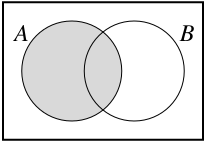
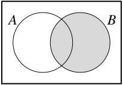
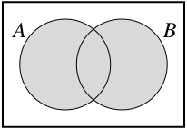
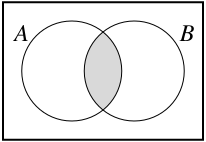
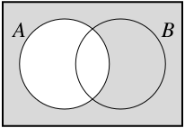
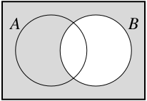

SectionUnions, Intersections, and Complements of Sets
In mathematics, the collection of points that make up a string or a blob of play-doh as in Activity 1.2 is represented as a set. Topology is then the study of these sets and what properties of the sets don’t change when transformations are applied to the sets. To study topology we will need a solid understanding of sets and different operations on sets.
What we saw in Preview Activity 1.1 is what is called a paradox. Our original attempt to define a set led to an impossible situation since both \(S \in S\) and \(S \notin S\) lead to contradictions. This paradox is called Russell’s paradox after Bertrand Russell, although it was apparently known before Russell. The moral of the story is that we need to be careful when making definitions. A set might seem like a simple object, and in our experi≈ence usually is, but formally defining a set can be problematic. As a result, we won’t state a formal definition, but rather take a set to be a collection of objects that doesn’t lead to a paradox. The objects are called the elements of the set. (In axiomatic set theory, a set is taken to be an undefined primitive — much as a point is undefined in Euclidean geometry.)
In order to effectively work with sets, we need to have an understanding what it means for two sets to be equal.
Activity1.3.
(a)
What should it mean for two sets to be equal? If \(A\) and \(B\) are sets, how do we prove that \(A = B\text{?}\) (This is question that requires discussion, which is different than a question that only asks for a computation or an example. Activities throughout this text will ask both types of questions.)
(b)
Let \(A = \{x \in \R \mid x \lt 2\}\) and \(B = \{x \in \R \mid x-1 \lt 1\}\text{.}\) Is \(A=B\text{?}\) If yes, prove your answer. If no, prove any containment that you can.
(c)
Let \(A = \{n \in \Z \mid 2 \text{ divides } n\}\) and \(B = \{n \in \Z \mid 4 \text{ divides } (n-2)\}\text{.}\) Is \(A=B\text{?}\) If yes, prove your answer. If no, prove any containment that you can.
(d)
Let \(A = \{n \in \Z \mid n \text{ is odd } \}\) and \(B = \{n \in \Z \mid 4 \text{ divides } (n-1) \text{ or } 4 \text{ divides } (n-3)\}\text{.}\) Is \(A=B\text{?}\) If yes, prove your answer. If no, prove any containment that you can.
Once we have the notion of a set, we can build new sets from existing ones. For example, we define the union, intersection, set difference, and complement of a set as follows.
The union of sets \(A\) and \(B\) is the set \(A \cup B\) defined as
\begin{equation*}
A \cup B = \{x \mid x \in A \text{ or } x \in B\}\text{.}
\end{equation*}
The intersection of sets \(A\) and \(B\) is the set \(A \cap B\) defined as
\begin{equation*}
A \cap B = \{x \mid x \in A \text{ and } x \in B\}\text{.}
\end{equation*}
Let \(A\) and \(B\) be sets. The set difference \(A \setminus B\) is the set
\begin{equation*}
A \setminus B = \{a \in A \mid a \notin B\}\text{.}
\end{equation*}
Let \(A\) be a subset of a set \(U\text{.}\) The complement of \(A\) in \(U\) is the set
\begin{equation*}
U \setminus A = \{x \in U \mid x \notin A\}\text{.}
\end{equation*}
The complement of a set \(A\) in a set \(U\) is also denoted by \(C_U(A)\text{,}\)\(C(A)\) (if the set \(U\) is understood), \(A^c\text{,}\) or even \(U-A\text{.}\)
We can visualize these sets using Venn diagrams. A Venn diagram is a depiction of sets using geometric figures. For example, if \(U\) is a set containing all other sets of interest (we call \(U\) the universal set), we can represent \(U\) as a large container (say a rectangle) with subsets \(A\) and \(B\) as smaller containers (say circles), and shade the elements in a given set. The Venn diagrams in Figure 1.2 depict the sets \(A\text{,}\)\(B\text{,}\)\(A \cup B\text{,}\)\(A \cap B\text{,}\)\(A^c\text{,}\) and \(B^c\text{.}\)



\begin{equation*}
A
\end{equation*}
\begin{equation*}
B
\end{equation*}
\begin{equation*}
A \cup B
\end{equation*}



\begin{equation*}
A \cap B
\end{equation*}
\begin{equation*}
A^{c}
\end{equation*}
\begin{equation*}
B^{c}
\end{equation*}
Figure1.2.Venn diagrams
As we have discussed, to prove that two sets \(X\) and \(Y\) are equal we prove that each is a subset of the other. The next example provides another illustration of the idea.
Example1.3.
Let \(A\text{,}\)\(B\text{,}\) and \(C\) be sets. We will prove that \(A \cap (B \setminus C) = (A \cap B) \setminus (A \cap C)\text{.}\)
To prove this set equality we must prove that \(A \cap (B \setminus C) \subseteq (A \cap B) \setminus (A \cap C)\) and \((A \cap B) \setminus (A \cap C) \subseteq A \cap (B \setminus C)\text{.}\) We start with \(A \cap (B \setminus C) \subseteq (A \cap B) \setminus (A \cap C)\text{.}\)
To prove that \(A \cap (B \setminus C) \subseteq (A \cap B) \setminus (A \cap C)\text{,}\) we need to demonstrate that every element in \(A \cap (B \setminus C)\) is also in \((A \cap B) \setminus (A \cap C)\text{.}\) To do this, we select an arbitrary element in \(A \cap (B \setminus C)\) and show that this element is in \((A \cap B) \setminus (A \cap C)\text{.}\) Let \(x \in A \cap (B \setminus C)\text{.}\) Then \(x \in A\) and \(x \in B \setminus C\text{.}\) The fact that \(x \in B \setminus C\) implies that \(x \in B\) but \(x \notin C\text{.}\) Therefore, \(x \in A\) and \(x \in B\text{,}\) but \(x \notin C\text{.}\) This implies that \(x \in A\) and \(x \in B\text{,}\) but \(x \in A\) and \(x \notin C\text{.}\) So \(x \in A\) and \(x \in B\text{,}\) but \(x \notin A \cap C\text{.}\) We conclude that \(x \in (A \cap B) \setminus (A \cap C)\text{.}\) This proves that \(A \cap (B \setminus C) \subseteq (A \cap B) \setminus (A \cap C)\text{.}\)
For the reverse containment, we let \(y \in (A \cap B) \setminus (A \cap C)\text{.}\) So \(y \in A \cap B\) but \(y \notin A \cap C\text{.}\) Since \(y \in A \cap B\text{,}\) we know that \(y \in A\) and \(y \in B\text{.}\) The fact that \(y \notin A \cap C\) means that \(y \notin C\text{.}\) So \(y \in A\text{,}\)\(y \in B\text{,}\) and \(y \notin C\text{.}\) Thus, \(y \in A\) and \(y \in B \setminus C\text{.}\) We conclude that \(y \in A \cap (B \setminus C)\text{,}\) which shows that \((A \cap B) \setminus (A \cap C) \subseteq A \cap (B \setminus C)\text{.}\) The two containments, \(A \cap (B \setminus C) \subseteq (A \cap B) \setminus (A \cap C)\) and \((A \cap B) \setminus (A \cap C) \subseteq A \cap (B \setminus C)\) demonstrate that \(A \cap (B \setminus C) = (A \cap B) \setminus (A \cap C)\text{.}\)
We will use the ideas in Activity 1.3 and Example 1.3 to prove set equalities throughout this text. The next activity will provide some additional practice.
Activity1.4.
In this activity we work with unions, intersections, and complements of sets. Let \(A\) and \(B\) be sets.
(a)
Let \(A = \{1,2,3,4,5,6\}\) and \(B = \{2,4,6,8,10\}\text{,}\) with \(U = \{1,2,3,4,5,6,7,8,9,10\}\text{.}\)
(i)
Determine the elements in \(A \cup B\) and \(A \cap B\text{.}\) What are the elements in \((A \cup B)^c\) and \((A \cap B)^c\text{?}\)
(ii)
Determine the elements in \(A^{c} \cup B^{c}\) and \(A^{c} \cap B^{c}\text{.}\)
(b)
Let \(A\) and \(B\) be arbitrary subsets of a universal set \(U\text{.}\) There are connections between \(A\text{,}\)\(B\) and their complements, unions, and intersections.
(i)
Use Venn diagrams to draw \((A \cup B)^c\) and \((A \cap B)^c\text{.}\)
(ii)
Use the Venn diagrams and the result of (a) to find and prove a relationship between \(A^c\text{,}\)\(B^c\) and \((A \cup B)^c\text{.}\)
(iii)
Use the Venn diagrams and the result of (a) to find and prove a relationship between \(A^c\text{,}\)\(B^c\) and \((A \cap B)^c\text{.}\)
In Activity 1.4 we worked with the union and intersection of two sets. There is no reason to restrict these definitions to only two sets, as the next activity illustrates.
Activity1.5.
To define an infinite collection of sets we often use what is called an indexing set. An indexing set allows us to consider a collection of objects that are in one-to-one correspondence with a set like the positive integers, or even the real numbers. When using an indexing set, we generally make a statement such as ``let \(\{A_{\alpha}\}\) for \(\alpha \in I\) be a collection of sets indexed by some set \(I\)". The collection \(\{A_{\alpha}\}_{\alpha \in I}\) is called an indexed family of sets.
(a)
The set \(I\) could be finite. As an example, let \(A_{n} = \{1, 2, 3, \ldots n\}\) for \(n\) in the set \(I = \{1,2,3, \ldots, 10\}\text{.}\)
(i)
What is \(A_5\text{?}\) What is \(A_{8}\text{?}\)
(ii)
How many sets are in the indexed family \(\{A_n\}_{n \in I}\text{?}\)
(b)
The indexing set can be infinite. For example, let \(A_{\alpha} = [0, |\alpha|)\) for \(\alpha\) in the set \(\R\) (where \([a,b)\) is the interval consisting of the real numbers \(x\) such that \(a \leq x \lt b\)). In this case, what is \(A_5\text{?}\) What is \(A_{\pi}\text{?}\) What is \(A_{-\frac{2}{3}}\text{?}\)
(c)
We have defined the union and intersection of two sets. The same idea can be extended to define the union and intersection of an indexed collection of sets.
(i)
Recall that if \(A\) and \(B\) are sets, the intersection \(A \cap B\) is the set \(\{x \mid x \in A \text{ and } x \in B\}\text{.}\) How can we extend this definition from two sets to any collection of sets? In other words, how do we define
In the example in (b), what set is \(\ds \bigcap_{\alpha \in \R} A_{\alpha}\text{?}\)
(ii)
Recall that if \(A\) and \(B\) are sets, the union \(A \cup B\) is the set \(\{x \mid x \in A \text{ or } x \in B\}\text{.}\) How can we extend this definition from two sets to any collection of sets? In other words, how do we define
In the example in (b), what set is \(\ds \bigcup_{\alpha \in \R} A_{\alpha}\text{?}\)
These properties \((A \cap B)^c = A^c \cup B^c\) and \((A \cup B)^c = A^c \cap B^c\) that we learned about in Activity 1.4 are called DeMorgan’s Laws. These laws apply to any union or intersection of sets, finite or infinite. The proofs are left for Exercise 4.
Theorem1.4.DeMorgan’s Laws.
Let \(\{A_{\alpha}\}\) is a collection of sets indexed by a set \(I\) in some universal set \(U\text{.}\) Then
Verify DeMorgan’s Laws in the specific case of \(A_{\alpha} = \{1, 2, 3, \ldots \alpha\}\) in \(U = \Z\text{,}\) where \(\alpha\) is any element of the indexing set \(I = \Z^+\text{.}\)
(b)
Why should the complement of a union be an intersection and why should the complement of an intersection be a union?